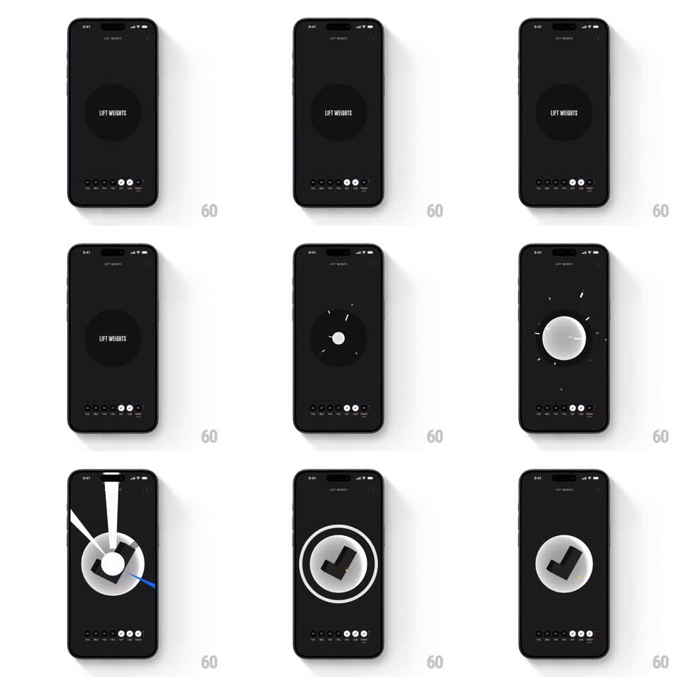

Media
Frame-by-frame

Rebuild this interaction 1:1: Not Boring Habits' long-press completion - holding the habit circle builds a glow until it detonates into a full-screen geometric burst that resolves into a 3D checkmark.

Rebuild this interaction 1:1: Not Boring Habits' long-press completion - holding the habit circle builds a glow until it detonates into a full-screen geometric burst that resolves into a 3D checkmark. ## Integration Integration: stack-agnostic spec - springs given as stiffness/damping, timed motions as duration + curve; map every value to your framework and animation library of choice. ## Scene Dark habit screen: a large circle button labeled "LIFT WEIGHTS" center stage, the habit-week strip at the bottom. Completion state: a big 3D sphere carrying a bold checkmark, ringed by an orbit line, with a yellow spark accent. ## Motion spec Pattern: long-press charge into full-screen detonation, ~1.5s. - Touch and hold: the circle begins charging - a glow builds at its edge and the button scales down slightly (1 to 0.95) while a radial progress fills around it over ~800ms; releasing early springs it back (200ms). - Charge complete: the button detonates - geometric shards (triangles, slivers) blast outward across the full screen (400ms, radial burst, ease-out), momentarily filling the frame. - The shards converge inward to assemble the 3D check sphere (spring stiffness 260 damping 16): the ball forms, the checkmark stamps onto it (scale 1.5 to 1, stiffness 380 damping 13), and an orbit ring draws around it (300ms stroke reveal). - The sphere settles into an idle float (+-8px vertical, 2.5s sine) with the spark accent twinkling. - The week strip below ticks the day cell on the detonation beat. ## Calibration - The hold must feel loaded: glow, shrink, and radial fill together, or the detonation has no wind-up. - The burst covers the full screen - a small poof undersells the payoff. ## Reduced motion Tap completes with a fade to the check sphere. ## Don't miss - The shards are the same material on the way out and the way in - the sphere visibly reuses the explosion. - The checkmark is stamped onto the sphere's surface, not floating in front of it.